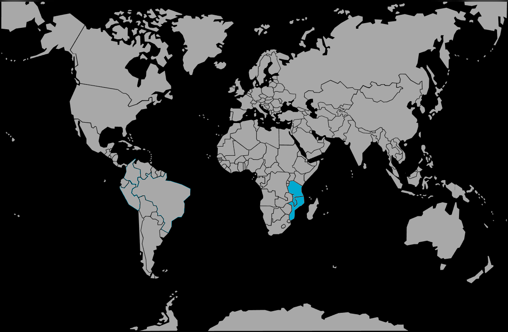

Systématique
- Ordre : Cichliformes
- Famille : Cichlidae
- Genre : Cyrtocara
- Espèce : Cyrtocara moorii
Cyrtocara moorii, souvent appelé dauphin bleu, est un grand cichlidé du lac Malawi reconnaissable à son front bombé et à sa robe bleue uniforme, plus ou moins intense selon l’humeur.
Relativement placide pour un cichlidé du Malawi, il atteint couramment 20 cm, voire 23–25 cm pour les vieux mâles en aquarium, ce qui impose un bac très spacieux et une maintenance en groupe structuré.
Dans le lac, Cyrtocara moorii fréquente les étendues sableuses peu profondes et suit souvent des espèces fouisseuses, récupérant les petits invertébrés mis au jour par leur activité de fouille.
En aquarium, il se montre généralement calme, mais un mâle adulte peut devenir dominant et intimider des congénères si le volume ou le nombre de refuges est insuffisant; une cohabitation avec d’autres Haps ou Aulonocara tranquilles de taille comparable est idéale.
Mode : incubateur buccal maternel; après la ponte sur le substrat et la fécondation, la femelle recueille les œufs dans sa bouche où ils incubent environ trois semaines.
La femelle cesse alors de s’alimenter et garde les alevins jusqu’à la nage libre; elle peut continuer à les abriter en cas de danger les premiers jours, ce qui demande un environnement peu stressant.
Dimorphisme sexuel : les mâles sont plus grands, plus intensément bleus et développent avec l’âge une bosse frontale très marquée; les femelles restent plus petites et moins colorées.
Espérance de vie : 8 à 10 ans, voire davantage, dans un grand volume avec une eau stable et une alimentation adaptée.
L’espèce occupe principalement les zones sableuses ouvertes du lac Malawi et du lac Malombé, entre quelques mètres et une quinzaine de mètres de profondeur, parfois à proximité de pentes rocheuses.
Répartition
Origine naturelle :
- Lac Malawi et lac Malombé, en Afrique de l’Est.
- Zones sableuses littorales et sublittorales, parfois biotopes de transition sable/roche.
On le rencontre isolé ou en petits groupes au‑dessus des substrats meubles, où il profite des nuages de sable soulevés par les cichlidés fouisseurs pour se nourrir.
Paramètres de maintenance
Température : 24 à 27 °C.
pH : 7,5 à 8,5, eau nettement alcaline.
GH : 10 à 25 °dGH, eau dure à très dure.
Courant : faible à modéré, avec une forte filtration et une excellente oxygénation.
Volume conseillé : au minimum 500–600 L pour un groupe (un mâle et plusieurs femelles), avec une large façade de nage et un épais substrat sableux.
Régime alimentaire
Régime : omnivore à tendance micro‑prédateur; dans la nature, il consomme principalement de petits invertébrés et des micro‑organismes débusqués dans le sable, ainsi qu’un peu d’algues.
En aquarium, une base de granulés ou sticks pour cichlidés du Malawi est complétée par des proies congelées ou vivantes (daphnies, mysis, krill, artémias) et quelques apports végétaux; éviter les nourritures trop grasses ou riches en protéines animales terrestres.
Des repas variés mais modérés, associés à une bonne hygiène de l’eau, limitent les risques de surcroissance et de problèmes digestifs chez ce grand cichlidé.